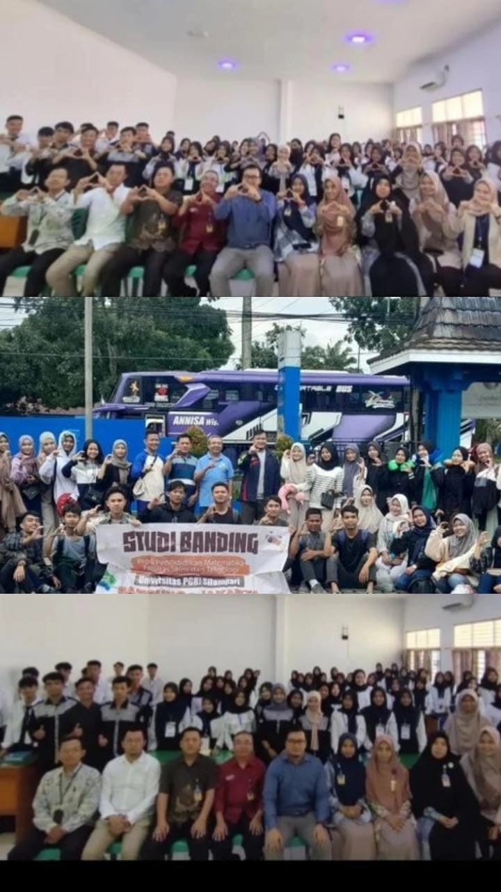
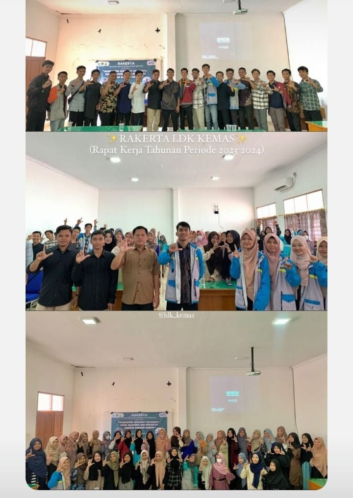

Ekstrakurikuler dan Kegiatan Prodi Pendidikan Matematika
A. Ekstrakurikuler
1. Himaptika
Himpunan Mahasiswa Pendidikan Matematika (HIMAPTIKA) adalah organisasi mahasiswa yang berfokus pada pendidikan matematika. HIMAPTIKA memiliki beberapa fungsi, di antaranya: Menampung aspirasi mahasiswa, Mengembangkan potensi dan bakat mahasiswa, Menjadi sarana komunikasi mahasiswa, Mendorong inovasi dan pengembangan mahasiswa.
2. LDK Kemas
LDK atau Latihan Dasar Kepemimpinan adalah pelatihan yang bertujuan untuk meningkatkan kemampuan kepemimpinan dan membangun karakter pribadi. Kegiatan ini dapat dilakukan oleh siswa, mahasiswa, atau pengurus organisasi.
B. Kegiatan
1. Webinar
Webinar adalah kegiatan seminar yang dilakukan secara daring atau online melalui situs web atau aplikasi berbasis internet. Webinar merupakan singkatan dari kata "web" dan "seminar".
2. Studi Banding
Studi banding adalah kegiatan belajar yang dilakukan di tempat lain untuk menambah wawasan dan pengetahuan. Kegiatan ini dilakukan untuk membandingkan kondisi objek studi di tempat lain dengan kondisi yang ada di tempat sendiri.
3. Training Dasar Organisasi
Kegiatan yang bertujuan untuk memberikan pembekalan dan latihan dasar kepada anggota organisasi. TDO dapat berisi materi-materi yang disampaikan oleh senior dalam organisasi, seperti kiat berorganisasi, tata cara surat menyurat, dan penjelasan SKPI.
4. Promosi Prodi
Kegiatan untuk menyampaikan informasi mengenai program studi kepada calon mahasiswa baru. Promosi merupakan komponen penting dalam kegiatan branding dan pemasaran.
5. Pelantikan Pengurus HIMAPTIKA
Acara yang dilakukan untuk meresmikan pengurus baru HIMAPTIKA. Acara ini biasanya disertai dengan pembacaan ikrar sumpah janji pengurus.